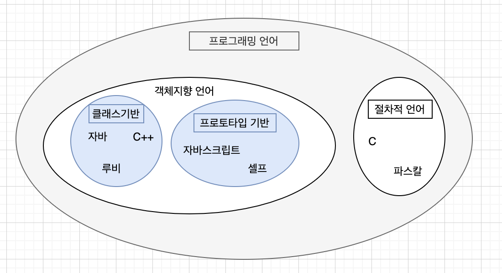
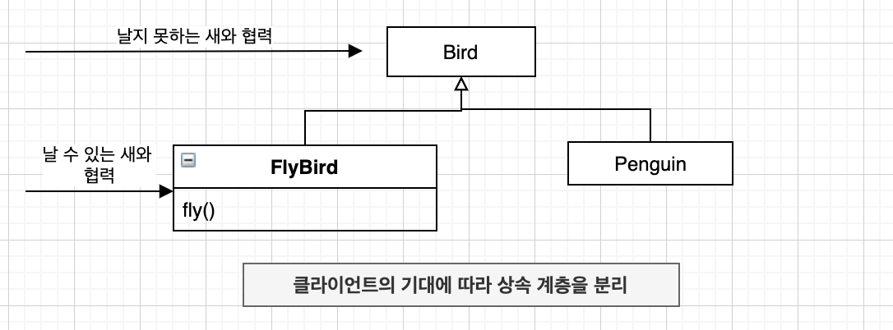
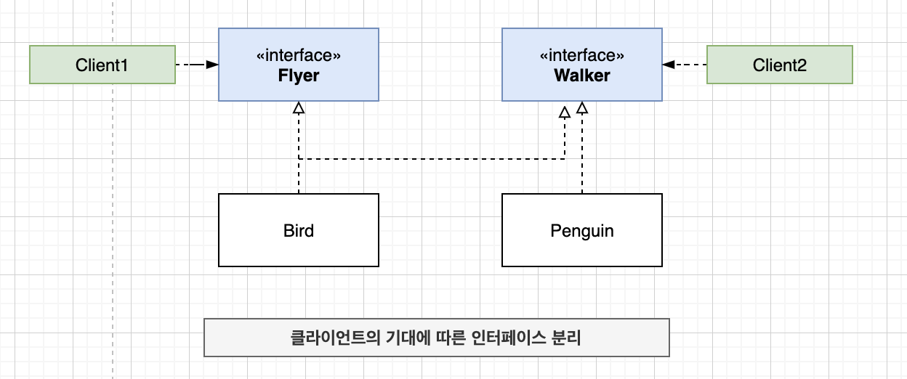
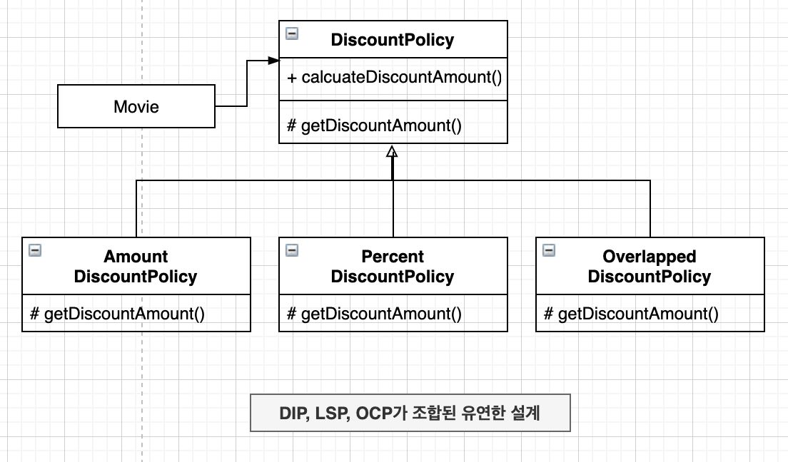

“OBJECTS 13장”
상속 용도
타입 계층 구현
부모 클래스는 자식 클래스의 일반화
자식 클래스는 부모 클래스의 특수화
- 코드 재사용
상속을 사용하는 일차적인 목표는 코드 재사용이 아니라 타입 계층을 구현하는 것이어야 한다.
타입
개념 관점의 타입

- 타입의 인스턴스
- 객체
- 자바, 루비, 자바스크립트, C는 프로그래밍 언어의 인스턴스
- 요소
- 심볼
- 타입의 이름
- 프로그래밍 언어
- 내연
- 타입의 정의
- 타입에 속하는 객체들이 가지는 공통적인 속성이나 행동
- 외연
- 타입에 속하는 객체들의 집합
- 프로그래밍 언어 타입의 경우 자바, 루비, 자바스크립트, C가 속한 집합
- 심볼
프로그래밍 언어 관점의 타입
- 타입에 수행될 수 있는 유효한 오퍼레이션의 집합을 정의한다.
- ‘+’ 연산자 : 원시형 숫자 타입이나 문자열 타입의 객체에 사용 가능, 클래스의 인스턴스에 대해서는 사용 불가
- 타입에 수행되는 오퍼레이션에 대해 미리 약속된 문맥을 제공한다.
- a + b , a와 b의 타입이 int 라면 두수를 더함, String 이라면 하나의 문자열로 합침
타입은 적용 가능한 오퍼레이션의 종류와 의미를 정의함으로써 코드의 의미를 명확하게 전달하고 개발자의 실수를 방지하기 위해 사용된다.
객체지향 패러다임 관점의 타입
- 타입이란 ?
- 개념 관점 : 공통의 특징을 공유하는 대상들의 분류
- 프로그래밍 언어 관점 : 동일한 오퍼레이션을 적용할 수 있는 인스턴스들의 집합
- 객체지향 패러다임 관점 : 객체가 수신할 수 있는 메시지의 종류를 정의
- 퍼블릭 인터페이스 : 객체가 수신할 수 있는 메시지의 집합
- 객체지향 프로그래밍에서 타입을 정의하는 것은 객체의 퍼블릭 인터페이스를 정의하는 것
객체의 퍼블릭 인터페이스가 객체의 타입을 결정한다. 따라서 동일한 퍼블릭 인터페이스를 제공하는 객체들은 동일한 타입으로 분류된다.
- 객체의 타입을 결정하는 것은 내부의 속성이 아니라 객체가 외부에 제공하는 행동임
타입 계층
타입 사이의 포함 관계
- 슈퍼타입
- 집합이 다른 집합의 모든 멤버를 포함
- 타입 정의 다른 타입 보다 좀 더 일반적
- 서브타입
- 집합에 포함되는 인스턴스들이 더 큰 집합에 포함
- 타입 정의가 다른 타입보다 좀더 구체적
- 내연 관점
- 일반화 : 어떤 타입의 정의를 좀 더 보편적이고 추상적으로 만드는 과정
- 특수화 : 어떤 타입의 정의를 좀 더 구체적이고 문맥 종속적으로 만드는 과정
객체지향 프로그래밍과 타입 계층
- 슈퍼 타입
- 서브타입이 정의한 퍼블릭 인터페이스를 일반화시켜 상대적으로 범용적이고 넓은 의미로 정의
- 서브 타입
- 슈퍼 타입이 정의한 퍼블릭 인터페이스를 특수화시켜 상대적으로 구체적이고 좁은 의미로 정의
서브타입의 인스턴스는 슈퍼타입의 인스턴스로 간주될 수 있다.
서브클래싱과 서브타이핑
- 객체지향 프로그래밍 언어에서 타입을 구현하는 일반적인 방법 : 클래스
- 타입 계층을 구현하는 일반적인 방법 : 상속
언제 상속을 사용해야 하는가?
- 상속 관계가 is - a 관계를 모델링 하는가?
- 클라이언트 입장에서 부모 클래스의 타입으로 자식 클래스를 사용해도 무방한가? (행동 호환성)
is-a 관계
1 | class Bird { |
1 | - 펭귄은 새다. |
- 정의가 아니라 기대되는 행동에 따라 타입 계층을 구성해야 함
- 타입 계층의 의미는 행동이라는 문맥에 따라 달라짐
행동 호환성
타입의 이름 사이에 개념적으로 어떤 연관성이 있다고 하더라도 행동에 연관성이 없다면 is-a관계를 사용하지 말아야 한다.
- 클라이언트의 관점
1 | class Penguin extends Bird { |
1 | class Penguin extends Bird { |
1 | class Penguin extends Bird { |
클라이언트의 기대에 따라 계층 분리하기


클라이언트에 따라 인터페이스를 분리하면 각 클라이언트의 요구가 바뀌더라도 영향의 파급 효과를 효과적으로 제어할 수 있게 된다.
… 이처럼 인터페이스를 클라이언트의 기대에 따라 분리함으로써 변경에 의해 영향을 제어하는 설계 원칙을 인터페이스 분리 원칙(ISP)라고 부른다.
- 설계가 꼭 현실 세계를 반영할 필요는 없음
- 중요한 것은 설계가 반영할 도메인의 요구사항이고, 그 안에서 클라이언트가 객체에게 요구하는 행동
- 최고의 설계는 제작하려는 소프트웨어 시스템이 기대하는 바에 따라 달라짐
- 나는 새도 있고 날 수 없는 새도 있다는 사실은 어떤 세계를 만들려고 하느냐에 따라 고려 대상이 되기도, 안되기도 함
서브클래싱과 서브타이핑
- 서브클래싱
- 다른 클래스의 코드를 재사용할 목적으로 상속을 사용 하는 경우
- 구현 상속
- 클래스 상속
- 서브타이핑
- 타입 계층을 구성하기 위해 상속을 사용하는 경우
- 인터페이스 상속
- 서브클래싱과 서브타이핑을 나누는 기준은 상속을 사용하는 목적
인터페이스 상속 관계를 갖는 경우 프로그램에는 슈퍼타입으로 정의하지만 런타임에 서브타입의 객체로 대체할 수 있다. … 즉, 추상클래스를 상속한다는 것은 단순한 코드의 재사용을 위한 상속이 아니라 추상 클래스가 정의하고 있는 인터페이스를 상속하겠다는 의미인 것이다.
- 서브타입이 슈퍼타입이 하는 모든 행동을 동일하게 할 수 있어야 함
- 행동 호환성
- 대체 가능성
리스코프 치환 원칙
서브타입은 그것의 기반 타입에 대해 대체 가능해야 한다.
- 자식 클래스가 부모 클래스와 행동 호환성을 유지함으로써 부모 클래스를 대체할 수 있도록 구현된 상속 관계만을 서브 타이핑이라고 불러야 함
클라이언트와 대체 가능성
- 클라이언트와 격리한 채로 본 모델은 의미있게 검증하는 것이 불가능
- 대체 가능성을 결정하는 것은 클라이언트
is-a 관계 다시 살펴보기
- 상속이 서브타이핑을 위해 사용될 경우에만 is-a 관계
- 서브클래싱을 구현하기 위해 상속을 사용했다면 is-a 관계라고 말할 수 없음
리스코프 치환 원칙은 유연한 설계의 기반이다

- 자식 클래스가 클라이언트의 관점에서 부모 클래스를 대체할 수 있다면, 기능 확장을 위해 자식 클래스를 추가하더라도 코드를 수정할 필요가 없음
타입 계층과 리스코프 치환 원칙
- 구현 방법과 무관하게 클라이언트의 관점에서 슈퍼타입에 대해 기대하는 모든 것이 서브타입에게도 적용되야 함
계약에 의한 설계와 서브타이핑
- 계약에 의한 설계
- 클라이언트와 서버 사이의 협력의 의무와 이익으로 구성된 계약의 관점에서 표현
- 구성
- 사전조건
- 클라이언트가 정상적으로 메서드를 실행하기 위해 만족시켜야 하는 조건
- 사후조건
- 메서드 실행 후 서버가 클라이언트에게 보장해야 하는 조건
- 클래스 불변식
- 메서드 실행 전과 후에 인스턴스가 만족시켜야 하는 조건
- 사전조건
서브타입이 리스코프 치환 원칙을 만족시키기 위해서는 클아이언트와 슈퍼타입 간에 체결된 ‘계약’을 준수해야 함
서브타입과 계약
계약의 관점에서 상속이 초래하는 가장 큰 문제
- 자식 클래스가 부모 클래스의 메서드를 오버라이딩 할 수 있다는 것
어떤 타입 : 슈퍼타입
- 더 약한 사전 조건 : 더 강한 사전 조건
- 서브 타입 될 수 있음
- 더 강한 사전 조건 : 더 약한 사전 조건
- 서브 타입 될 수 없음
- 더 강한 사후 조건 : 더 약한 사후 조건
- 서브 타입 될 수 있음
- 더 약한 사후 조건 : 더 강한 사후 조건
- 서브 타입 될 수 없음
- 더 약한 사전 조건 : 더 강한 사전 조건